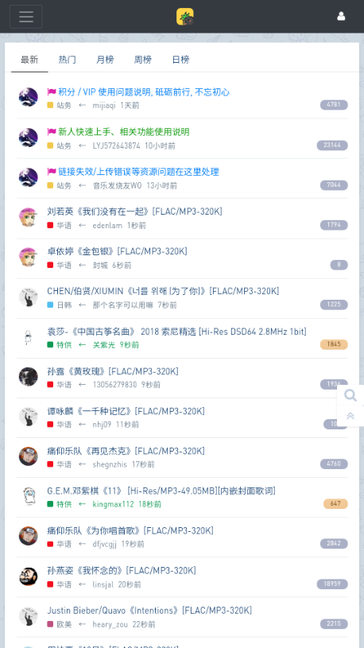
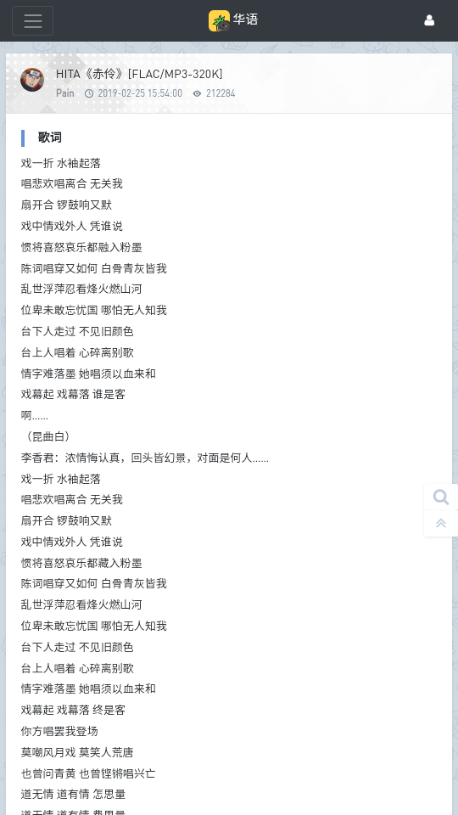

用 HiFiNi app 八个月，它成了我找无损音乐的默认入口
从一开始嫌它界面简陋、搜索逻辑绕弯，到现在每天随手打开搜一首歌的无损版，聊聊长期用下来那些当初没注意到的细节。
当初为什么装
八个月前我正换无损音源——之前一直用某音乐平台的会员下载 320K，慢慢想凑一套 FLAC 收藏。朋友说 HiFiNi app官网 上介绍它能直接逛音乐磁场社区，不用每次开浏览器登网页，就顺手装了。安装过程没什么好说的，从下载拿到安装包后，走了一遍安卓侧载的流程，给文件管理器授了个未知来源权限，两分钟搞定。
装完打开第一印象其实挺素的：一个帖子列表，一个搜索框，没有启动动画，没有引导弹窗。当时心想，这不就是个套壳浏览器吗？

哪点越用越顺手
格式关键词过滤是我后来才真正用熟的功能。一开始搜歌就是歌名加个歌手，结果帖子里混着 MP3、FLAC、Hi-Res 各种格式，还得一个个点进去看标题后缀。后来摸索到在搜索框里直接加 FLAC 或者 Hi-Res，搜索引擎就只吐带对应标注的帖子出来。更巧的是还有反向过滤——有时候我只想收无损，不想看 MP3，就在歌名后面加个 -MP3，脏结果一下就没了。
这个习惯一旦形成，搜歌效率直接翻倍。现在我默认搜「歌名 FLAC」，偶尔想看看有没有 DSD 规格的母带，就单独敲个 DSD，相当于把整个社区的高规格资源一次性扒出来。社区帖子标题的格式标注其实相当规范，这个过滤逻辑能稳定命中，没有出现过什么标注漏识别的情况。
歌词片段搜索是另一个慢慢发现的好用处——这个功能我后来在HiFiNi app文档里也确认了原理，搜索引擎会同时扫帖子标题和正文里内嵌的歌词。我试过只打「蚂蚁也要」四个字，居然把《学生哥》那篇帖子捞出来了——标题里没这句，但帖子正文内嵌了完整歌词。不是所有帖子都带内嵌歌词，热门资源命中率高一些，但够用了。
哪点越用越烦
说个反直觉的：分区导航反而不如搜索好用。社区帖子按华语、欧美、日音、古典这些分区组织，我一开始也习惯按分区逛，想收华语老歌就进华语区慢慢翻。但分区帖子量太大，一页一页刷效率极低，而且分区里混着各种格式、各种时期的资源，筛选成本高。后来索性直接用搜索框解决一切，分区导航变成了偶尔没事干的时候才会点开闲逛的东西。
还有一个小困扰：社区帖子的发布时间不显示。我有时候想找某个歌手最近有没有新资源，搜出来的帖子不知道是上周发的还是三年前发的，只能点进去看楼层里有没有最近的回复。这不完全是 HiFiNi app 的锅——网页版社区也是这个设计——但移动端点进去看比网页麻烦得多。
哪个功能成了每天离不开的
内嵌在线试听。搜到结果先点进去，帖子里自带播放器直接试播放，确认版本对不对、音质合不合预期，再决定要不要收藏或者下载。以前用浏览器的时候得先下载到本地才能听，现在几秒就能验证，收藏夹里因此少了不少冲动加进去后来又嫌音质不对的资源。

观感修正：当初的判断变了
刚装的时候我觉得它就是个套壳浏览器，界面简陋、没有任何花哨功能。八个月后我发现，它该有的功能都在刀刃上——格式过滤、歌词搜、内嵌试听，这几个点刚好戳中逛音乐资源社区最痛的几个环节。我甚至觉得它有点过于克制了：没有推送、没有签到、没有社区互动功能（虽然帖子里有评论区，但 app 本身不做推送提醒），就是纯粹让你搜歌、看帖、收藏。
当初低估的是这种克制的价值。音乐资源类 app 最怕的就是在社区功能上做加法——加关注、加私信、加动态，最后变成一个重社交轻资源的社区。HiFiNi app 没走那条路，八个月了，每次打开还是那个帖子列表加搜索框，安静得像一个工具。
当初高估的是多端同步能力。收藏夹我以为能跟网页版社区打通，结果发现是 app 自己存的一份，换了手机登录同一个账号收藏没跟着过去。这个我至今没找到设置里有没有开关，可能就是没做。好在收藏量不大，每次换手机手动重新搜一遍收藏也就半小时的事。
去留结论
目前不会卸载。它已经成了我找无损音乐的默认入口——想搜一首歌，第一个念头就是打开它敲关键词加 FLAC。但如果出现下面两个信号，我会认真考虑换工具：
第一，社区格式标注不再规范了。格式过滤这个功能的前提是帖子标题里老老实实标 [FLAC]、[Hi-Res]，如果哪天发帖的人开始乱写标注或者干脆不标，搜索命中率会直接崩。
第二，社区本身挂了或者帖子质量明显下降。HiFiNi app 本质上是社区的一个移动端入口，社区是皮也是骨。
顺手交代
这套资料在三处都能拿到——GitHub 主仓库是首发，国内访问慢的时候可以切去Gitee 镜像，另外GitCode 备份也会同步更新，方便不同网络环境的人查阅。